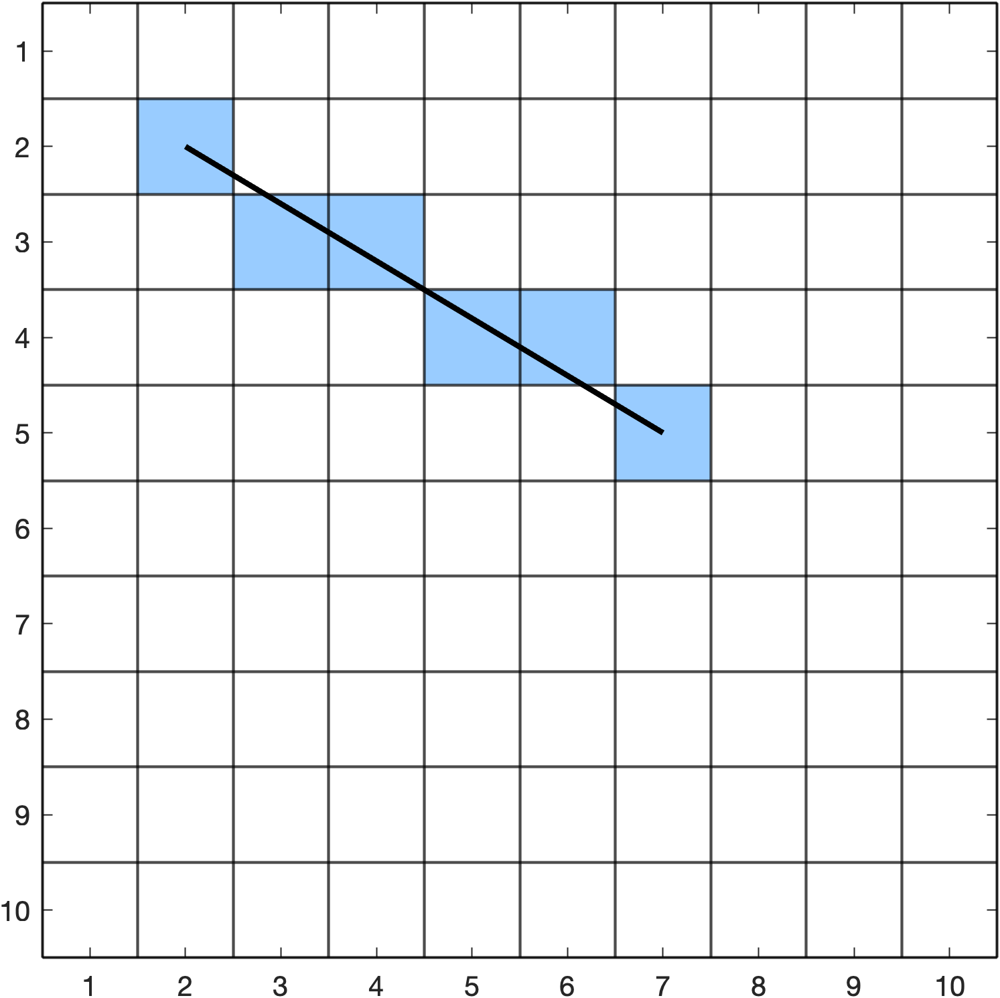
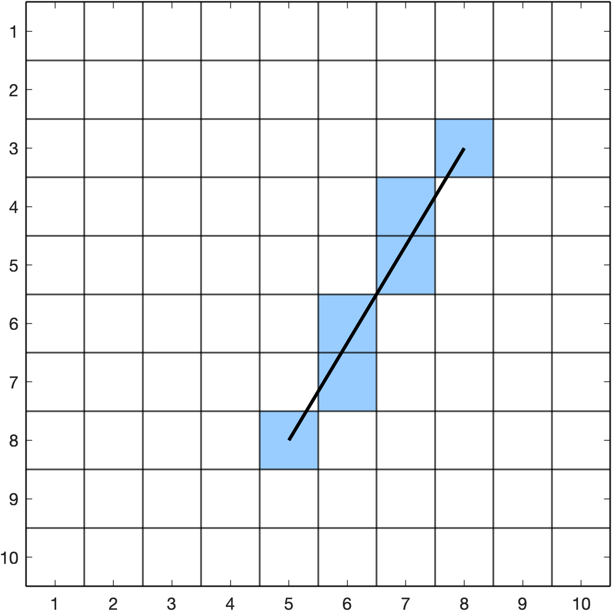
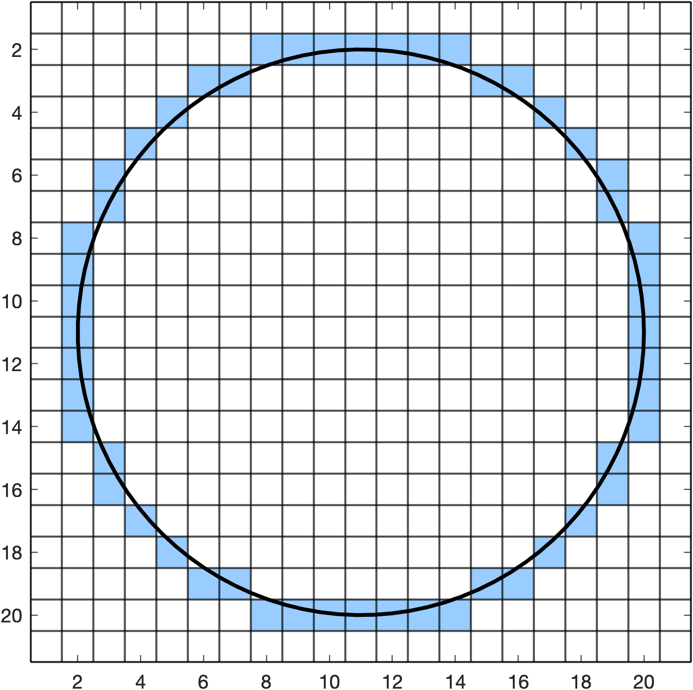
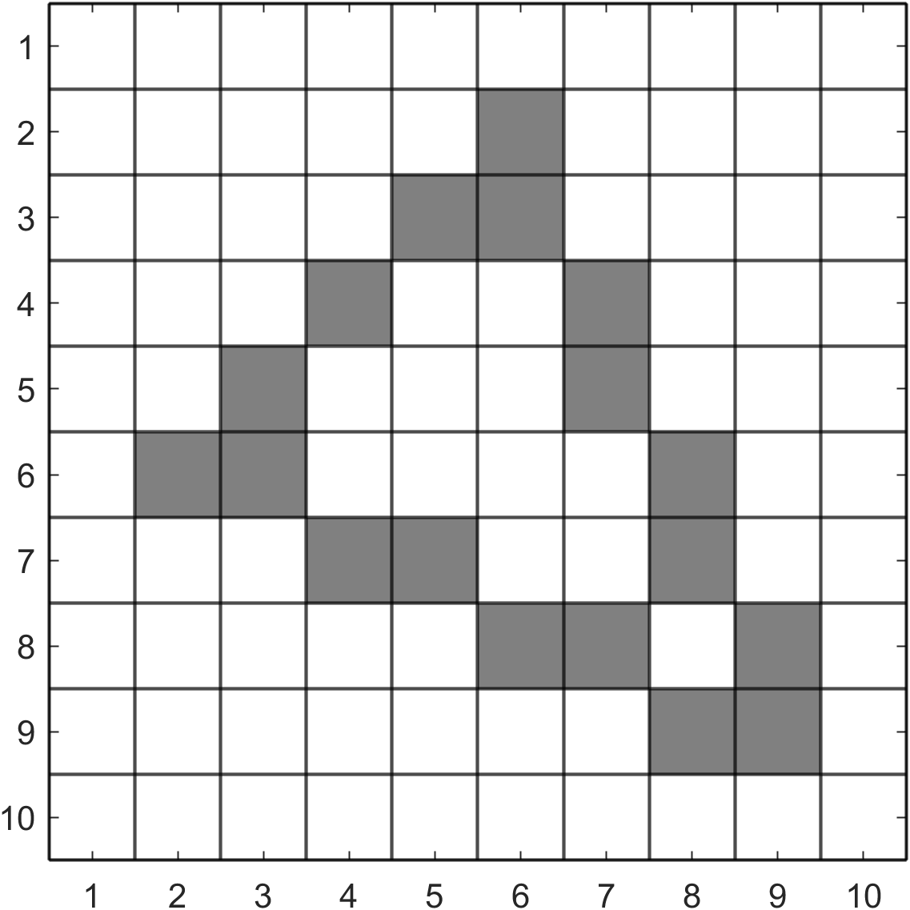
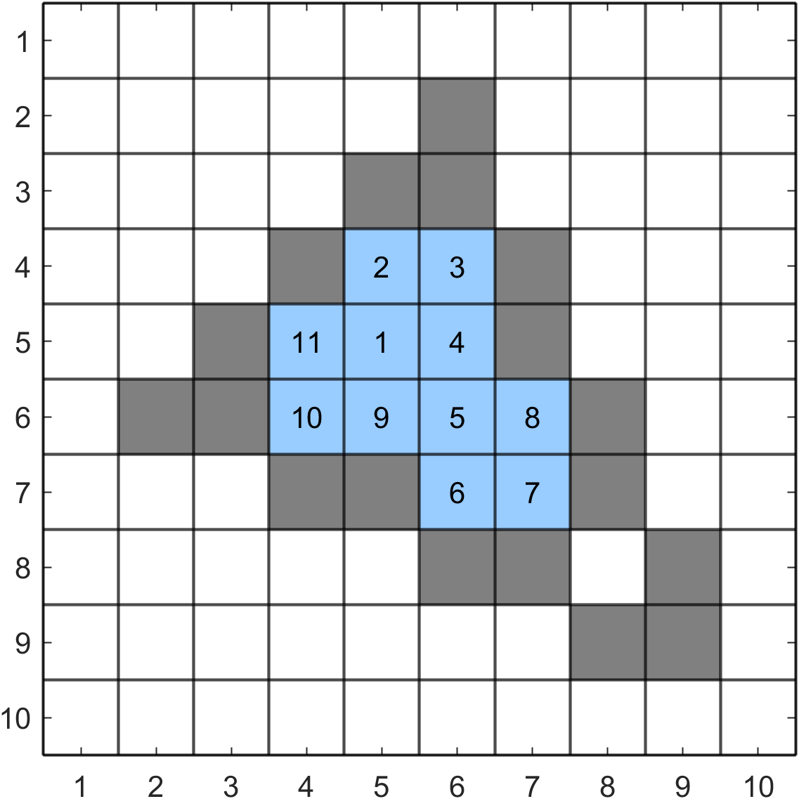
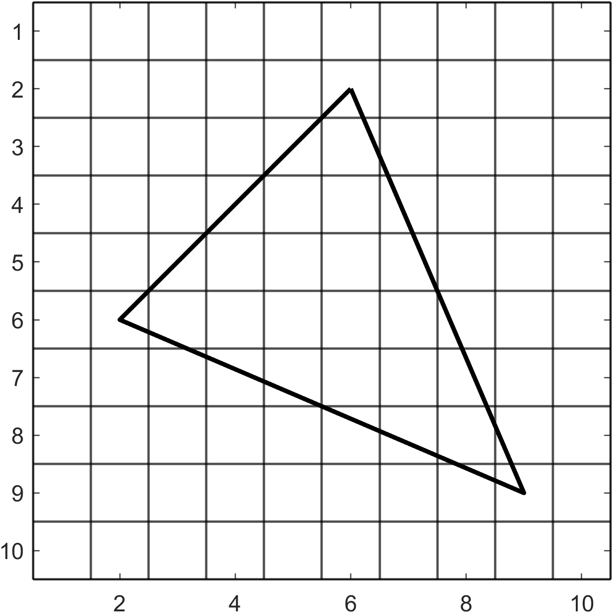
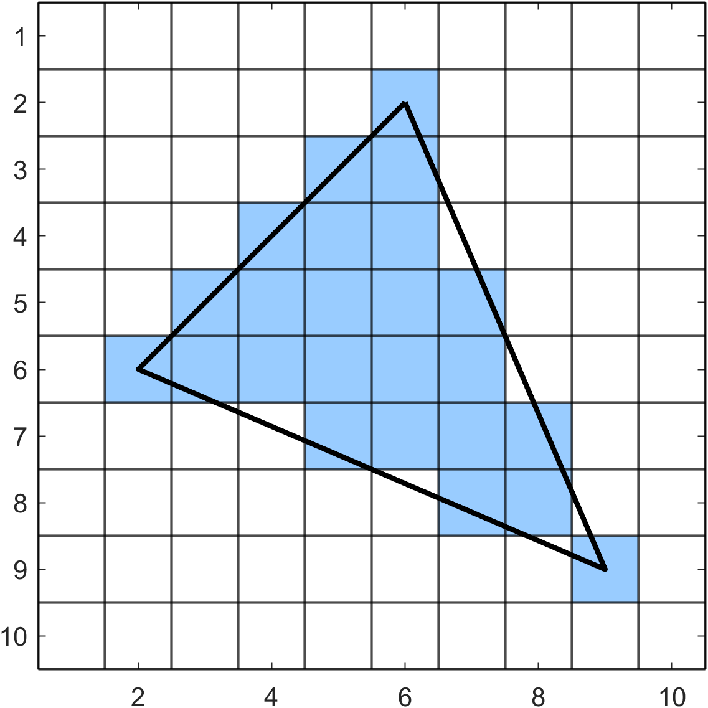

Rasterising Exercises
Rasterising Exercises#
Exercise 26
Writing out each stage of the algorithm, use the modified Bresenham's algorithm to draw the lines joining points with the following co-ordinates:
(a) \((2,2)\) and \((7,5)\)
(b) \((8,3)\) and \((5,8)\)
Solution to Exercise 26
(a) \(\Delta x = |7 - 2| = 5\), \(\Delta y = |5 - 2| = 3\), \(x_{step} = 1\), \(y_{step} = 1\) and \(d = 2(5) - 2(3) = 4\). So we update \(x\) if \(d \geq -3\) and \(y\) if \(d \leq 5\).
Stepping through the algorithm
\(x\) |
\(y\) |
\(d\) |
decision |
|---|---|---|---|
\(2\) |
\(2\) |
\(4\) |
update \(x\) and \(y\) |
\(3\) |
\(3\) |
\(4-2(3)+2(5)=8\) |
only update \(x\) |
\(4\) |
\(3\) |
\(8-2(3)=2\) |
update \(x\) and \(y\) |
\(5\) |
\(4\) |
\(2-2(3)+2(5)=6\) |
only update \(x\) |
\(6\) |
\(5\) |
\(6-2(3)=0\) |
update \(x\) and \(y\) |
\(7\) |
\(5\) |
\(0-2(3)+2(5)=4\) |
terminate algorithm |
So we plot pixels \((2,2)\), \((3,3)\), \((4,3)\), \((5,4)\), \((6,5)\) and \((7,5)\).
{kind=link}

(b) \(\Delta x = |5 - 8| = 3\), \(\Delta y = |8 - 3| = 5\), \(x_{step} = -1\), \(y_{step} = 1\) and \(d = 2(3) - 2(5) = -4\). So we update \(x\) if \(d \geq -5\) and \(y\) if \(d \leq 3\).
Stepping through the algorithm
\(x\) |
\(y\) |
\(d\) |
decision |
|---|---|---|---|
\(8\) |
\(3\) |
\(-4\) |
update \(x\) and \(y\) |
\(7\) |
\(4\) |
\(-4-2(5)+2(3)=-8\) |
only update \(y\) |
\(7\) |
\(5\) |
\(-8+2(3)=-2\) |
update \(x\) and \(y\) |
\(6\) |
\(6\) |
\(-2-2(5)+2(3)=-6\) |
only update \(y\) |
\(6\) |
\(7\) |
\(-6+2(3)=0\) |
update \(x\) and \(y\) |
\(5\) |
\(8\) |
\(0-2(5)+2(3)=-4\) |
terminate algorithm |
So we plot pixels \((8,3)\), \((7,4)\), \((7,5)\), \((6,6)\), \((6, 7)\), \((5, 8)\).
{kind=link}

Exercise 27
Writing out each stage of the algorithm, use the midpoint algorithm to calculate the positions of pixels on the first octant of a circle centred at \((11,11)\) with radius 9.
Solution to Exercise 27
\(x\) |
\(y\) |
\(d\) |
decision |
|---|---|---|---|
\(9\) |
\(0\) |
\(-8\) |
increment \(y\) |
\(9\) |
\(1\) |
\(-8+2(0)+3=-5\) |
increment \(y\) |
\(9\) |
\(2\) |
\(-5+2(1)+3=0\) |
increment \(y\) |
\(9\) |
\(3\) |
\(0+2(2)+3=7\) |
increment \(y\) and decrement \(x\) |
\(8\) |
\(4\) |
\(7+2(3)-2(9)+5=-1\) |
increment \(y\) |
\(8\) |
\(5\) |
\(-1+2(4)+3=10\) |
increment \(y\) and decrement \(x\) |
\(7\) |
\(6\) |
\(10-2(8)+3=-3\) |
increment \(y\) |
\(7\) |
\(7\) |
\(-3+2(6)-2(7)+3=1\) |
terminate algorithm |
So the pixels on the first octant are \((20,11)\), \((20,12)\), \((20,13)\), \((20,14)\), \((19,15)\), \((19,16)\), \((18,17)\) and \((18,18)\).
{kind=link}

Exercise 28
The edges of a triangular polygon with vertices at the pixel co-ordinates \((6, 2)\), \((2, 6)\) and \((9, 9)\) have been rasterised resulting in the raster shown below. Using the starting pixel \((5,5)\), use the flood fill algorithm to fill the interior of the polygon where the target colour is white and the replacement colour is blue. Write out the queue at each step of the algorithm.
{kind=link}

Solution to Exercise 28
{kind=link}

Exercise 29
Use the scanline algorithm to rasterise the triangular polygon from Exercise 28.
{kind=link}

Solution to Exercise 29
ET
x 1/m ymin ymax
e1 | 6 | -1 | 2 | 6 |
e2 | 2 | 2.33 | 6 | 9 |
e3 | 6 | 0.43 | 2 | 9 |
\(y=2\): move e1 and e3 to AET
ET AET
x 1/m ymin ymax x 1/m ymax
e2 | 2 | 2.33 | 6 | 9 | e1 | 6 | -1 | 6 |
e3 | 6 | 0.43 | 9 |
Fill \((6,2)\)
\(y=3\)
ET AET
x 1/m ymin ymax x 1/m ymax
e2 | 2 | 2.33 | 6 | 9 | e1 | 5 | -1 | 6 |
e3 | 6.43 | 0.43 | 9 |
Fill \((5,3) \to (6,3)\)
\(y = 4\)
ET AET
x 1/m ymin ymax x 1/m ymax
e2 | 2 | 2.33 | 6 | 9 | e1 | 4 | -1 | 6 |
e3 | 6.86 | 0.43 | 9 |
Fill \((4,4) \to (6,4)\)
\(y = 5\)
ET AET
x 1/m ymin ymax x 1/m ymax
e2 | 2 | 2.33 | 6 | 9 | e1 | 3 | -1 | 6 |
e3 | 7.29 | 0.43 | 9 |
Fill \((3,5) \to (7,5)\)
\(y = 6\): move e2 from ET to AET and remove e1 from AET
AET
x 1/m ymax
e2 | 2 | 2.33 | 9 |
e3 | 7.72 | 0.43 | 9 |
Fill \((2,6) \to (7,6)\)
\(y = 7\)
AET
x 1/m ymax
e2 | 4.33 | 2.33 | 9 |
e3 | 8.15 | 0.43 | 9 |
Fill \((5,7) \to (8,7)\)
\(y = 8\)
AET
x 1/m ymax
e2 | 6.66 | 2.33 | 9 |
e3 | 8.58 | 0.43 | 9 |
Fill \((7,8) \to (8,8)\)
\(y = 9\)
AET
x 1/m ymax
e2 | 9.00 | 2.33 | 9 |
e3 | 9.00 | 0.43 | 9 |
Fill \((9,9)\)
{kind=link}
